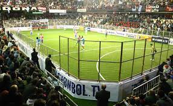

¿Cómo se juega? Los partidos se disputan en escenarios bajo techo, se juegan dos tiempos de 30 minutos cada uno, con una pausa de 10. La superficie del terreno de juego es de césped sintético y el mismo es cercado, impide por tal motivo que el balón salga por los laterales, como así también al costado de los arcos. La medida de la cancha es de 42 × 22 metros y cada equipo se compone por 6 o 5 jugadores por cada lado. Historia Se inició en México en la última mitad de la década de los sesentas con el nombre de "Five a side" (Fútbol cinco) practicado primero por los equipos profesionales de fútbol soccer, quienes en una cancha de hockey utilizaron el redondel y cubrieron el piso con pasto sintético. Posteriormente esta actividad se popularizó entre la población en general.

En los años 1970 esta actividad llega a los Estados Unidos en donde se comenzó a practicar con el nombre de "Indoor Soccer" debido a que se jugaba en interiores (indoors) a diferencia del Fútbol Soccer el cual se practicaba en exteriores (outdoors). En 1977 nace en EE. UU. la "Major Indoor Soccer League (MISL) la cual desapareció poco después; en 1993 se creó otra liga profesional en Estados Unidos, la "Continental Indoor Soccer League" (CISL).mm Existen ligas profesionales en Alemania, Países Bajos, España, Reino Unido, Australia, México, Brasil, Canadá, Guyana, Colombia y Estados Unidos; combina el balompié tradicional y el fútbol sala. Su popularidad creció en algunos países de Latinoamérica bajo la influencia de Iván Zamorano, Alejandro Mancuso, Carlos Valderrama, Gabriel Cedrés y Rivelino Carassa.[cita requerida] Esta idea fue creada como un servicio para satisfacer necesidades dirigidas a un grupo de personas que buscan mejorar la calidad de vida a través de la práctica del deporte, exigiendo una disciplina que tenga características innovadoras y que la conviertan en una práctica pionera, con características específicas y técnicas en dos áreas específicas: la logística y el cumplimiento de los procesos.
Reglas del juego Todos los equipos tienen que inscribir a diez jugadores como máximo y ocho como mínimo para la disputa del encuentro, siendo uno de ellos inscrito como portero. El jugador llevará su nombre en la parte superior trasera de su camiseta. El balón debe ser número 4. El reloj del estadio es orientativo. El tiempo no se detiene en ningún momento. El árbitro del partido descontará el tiempo que considere oportuno, advirtiendo visiblemente al segundo árbitro en el último minuto de cada tiempo. Las sustituciones han de hacerse por el lugar correspondiente, es decir, entre la mesa de anotadores y el banquillo, saliendo primero el jugador sustituido y entrando posteriormente el jugador que ingresa en el terreno de juego. El saque de banda ha de realizarse de frente al campo y con los pies situados perpendicularmente al muro y al lado de este. El balón ha de impulsarse por debajo de la cintura y con una sola mano. El saque de esquina se efectuará con el pie desde el punto del córner. No se puede demorar ni la falta, ni el córner ni el saque de centro, así como el saque de meta, más de cinco segundos. En caso de sobrepasar este tiempo, se señalará falta desde el mismo punto. No tendrán validez los goles marcados con la mano por el portero, ya sea en el saque de puerta como en el desarrollo normal del encuentro. El balón puede atravesar el medio del campo en el saque de meta realizado por el portero. El portero no puede demorar el juego más de cinco segundos reteniendo el balón en su propia área cuando tiene la posesión del mismo. No está permitido agarrarse al muro, de tal manera que ello suponga una ventaja frente al rival. La barrera en las faltas y córneres estará situada a 5 metros. Todas las faltas se sacarán de manera directa.